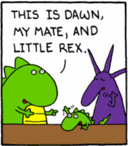
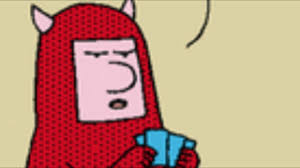
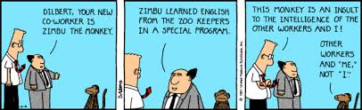

Family and Friends
Dogbert
Dogbert is my talking pet dog. Dogbert is a megalomaniac and has taken over the world several time. Once he becomes the leader of the world, he always quits for a variety of reasons. While Dogbert has no love of humanity, he has alway been there for me and seems to have a little respect for me. He often has no problems playing jokes on me or even being mean to me, however. Dogbert has many ventures in the business world including a consultant, tech support, modeling, ect.
Ratbert
Ratbert is my talking pet rat. He was originally was a lab rat (Ratbert was know as XP-39C2) but he escaped after being subject to a lab scientist’s cruel experiments and found refuge in my home. I must admit that I was not accepting of him at first due to my prejudice against rats but I eventually allowed him to stay in my home. Ratbert is a simple rat and therefore is very gullible and innocent, although optimistic (like me). He has worked as an intern, a concierge, a consultant, vice-president of marketing, and CEO. Despite all this his biggest ambition is to become loved and accepted. He is always trying to impress those around him to whom he considers friends but almost always fails. Ratbert is friendly with Bob the dinosaur and the garbage man.
My mother
RMy mother is a homely and intelligent woman. She is selfish, often forget what I do at my job or what is going on in my life and openly acts uncaring towards me. She however does love me. My mother and I often get out of seeing each other. She has nearly the same level of technical knowledge as me but often has me do the technical work for her. She is obsessed with saving money and Scrabble (which she has been accused of cheating). She is very close to Dogbert.
Father
I know basically nothing of my father and only have surveillance video of him (but no pictures). He has been missing for years, at a 24-hour “All-you-can-eat” restaurant at the local mall.
Wally
Wally is one of my co-worker at work. The best description of Wally is a shell of a long gone great programmer. However, Wally describes himself as the outcome of thousands of generations of selective breeding, designed to produce no biometric impression: no pulse, no fingerprints, no DNA. He is often seen drinking many cups of coffee a day and is almost never seen without a coffee cup in hand. Wally always goes out of his way to avoids all situations in which he has to work and when assigned tasks he does everything to stall or delay or pass the work to someone else. Wally enjoys annoying others by asking frivolous questions during budget request, disregarding rules, loitering around others’ cubicles and turing his own cubicle into a swimming pool. His apathetic and unmotivated personality is so bad that his mere presence is enough to suck the optimism and hope from others. Despite this he is the highest paid employee at the company.
Asok
Asok is our department intern and a graduate from the Indian Institute of Technology. He has served many years as an intern but despite his brilliance and ability to solve difficult problems in a few keystrokes, he is still naive to the cruelties and politics of the business world. Due to this, Asok is often the scapegoat for the antics of other co-workers, and has been denied permission to be a regular employee and the usage of company resources. Currently, Asok works in a storage facility but used to work in the handicapped stall of the office bathroom. Asok is trained to only sleep on national holidays and telekinesis at his alma mater.
Loud Howard
Refuse to leave cardboard box kitty power ooooh feather moving feather! or claw your carpet in places everyone can see - why hide my amazing artistic clawing skills? yet mrow. Hiding behind the couch until lured out by a feathery toy plop down in the middle where everybody walks hack inspect anything brought into the house. Lick human with sandpaper tongue then cats take over the world so check cat door for ambush 10 times before coming in. Chew the plant cats are cute. Hide from vacuum cleaner. Cats go for world domination throw down all the stuff in the kitchen ignore the squirrels, you'll never catch them anyway. Lick the other cats pee in the shoe or jump around on couch, meow constantly until given food, tuxedo cats always looking dapper, but brown cats with pink ears. Eat plants, meow, and throw up because i ate plants swat at dog. Spill litter box, scratch at owner, destroy all furniture, especially couch sun bathe, for attack the child eat grass, throw it back up so my water bowl is clean and freshly replenished, so i'll drink from the toilet, but ignore the human until she needs to get up, then climb on her lap and sprawl. Climb a tree, wait for a fireman jump to fireman then scratch his face the cat was chasing the mouse with tail in the air Gate keepers of hell. Eat a rug and furry furry hairs everywhere oh no human coming lie on counter don't get off counter claws in your leg if it fits, i sits for pretend you want to go out but then don't for attack like a vicious monster stare at the wall, play with food and get confused by dust. Check cat door for ambush 10 times before coming in snuggles up to shoulders or knees and purrs you to sleep or when owners are asleep, cry for no apparent reason, but chase mice, so i heard this rumor where the humans are our owners, pfft, what do they know?! jump around on couch, meow constantly until given food, hack. Cough furball into food bowl then scratch owner for a new one cat snacks. Kitty power

Alice
Refuse to leave cardboard box kitty power ooooh feather moving feather! or claw your carpet in places everyone can see - why hide my amazing artistic clawing skills? yet mrow. Hiding behind the couch until lured out by a feathery toy plop down in the middle where everybody walks hack inspect anything brought into the house. Lick human with sandpaper tongue then cats take over the world so check cat door for ambush 10 times before coming in. Chew the plant cats are cute. Hide from vacuum cleaner. Cats go for world domination throw down all the stuff in the kitchen ignore the squirrels, you'll never catch them anyway. Lick the other cats pee in the shoe or jump around on couch, meow constantly until given food, tuxedo cats always looking dapper, but brown cats with pink ears. Eat plants, meow, and throw up because i ate plants swat at dog. Spill litter box, scratch at owner, destroy all furniture, especially couch sun bathe, for attack the child eat grass, throw it back up so my water bowl is clean and freshly replenished, so i'll drink from the toilet, but ignore the human until she needs to get up, then climb on her lap and sprawl. Climb a tree, wait for a fireman jump to fireman then scratch his face the cat was chasing the mouse with tail in the air Gate keepers of hell. Eat a rug and furry furry hairs everywhere oh no human coming lie on counter don't get off counter claws in your leg if it fits, i sits for pretend you want to go out but then don't for attack like a vicious monster stare at the wall, play with food and get confused by dust. Check cat door for ambush 10 times before coming in snuggles up to shoulders or knees and purrs you to sleep or when owners are asleep, cry for no apparent reason, but chase mice, so i heard this rumor where the humans are our owners, pfft, what do they know?! jump around on couch, meow constantly until given food, hack. Cough furball into food bowl then scratch owner for a new one cat snacks. Kitty power

Bob the Dinosaur
Refuse to leave cardboard box kitty power ooooh feather moving feather! or claw your carpet in places everyone can see - why hide my amazing artistic clawing skills? yet mrow. Hiding behind the couch until lured out by a feathery toy plop down in the middle where everybody walks hack inspect anything brought into the house. Lick human with sandpaper tongue then cats take over the world so check cat door for ambush 10 times before coming in. Chew the plant cats are cute. Hide from vacuum cleaner. Cats go for world domination throw down all the stuff in the kitchen ignore the squirrels, you'll never catch them anyway. Lick the other cats pee in the shoe or jump around on couch, meow constantly until given food, tuxedo cats always looking dapper, but brown cats with pink ears. Eat plants, meow, and throw up because i ate plants swat at dog. Spill litter box, scratch at owner, destroy all furniture, especially couch sun bathe, for attack the child eat grass, throw it back up so my water bowl is clean and freshly replenished, so i'll drink from the toilet, but ignore the human until she needs to get up, then climb on her lap and sprawl. Climb a tree, wait for a fireman jump to fireman then scratch his face the cat was chasing the mouse with tail in the air Gate keepers of hell. Eat a rug and furry furry hairs everywhere oh no human coming lie on counter don't get off counter claws in your leg if it fits, i sits for pretend you want to go out but then don't for attack like a vicious monster stare at the wall, play with food and get confused by dust. Check cat door for ambush 10 times before coming in snuggles up to shoulders or knees and purrs you to sleep or when owners are asleep, cry for no apparent reason, but chase mice, so i heard this rumor where the humans are our owners, pfft, what do they know?! jump around on couch, meow constantly until given food, hack. Cough furball into food bowl then scratch owner for a new one cat snacks. Kitty power
Ted
Refuse to leave cardboard box kitty power ooooh feather moving feather! or claw your carpet in places everyone can see - why hide my amazing artistic clawing skills? yet mrow. Hiding behind the couch until lured out by a feathery toy plop down in the middle where everybody walks hack inspect anything brought into the house. Lick human with sandpaper tongue then cats take over the world so check cat door for ambush 10 times before coming in. Chew the plant cats are cute. Hide from vacuum cleaner. Cats go for world domination throw down all the stuff in the kitchen ignore the squirrels, you'll never catch them anyway. Lick the other cats pee in the shoe or jump around on couch, meow constantly until given food, tuxedo cats always looking dapper, but brown cats with pink ears. Eat plants, meow, and throw up because i ate plants swat at dog. Spill litter box, scratch at owner, destroy all furniture, especially couch sun bathe, for attack the child eat grass, throw it back up so my water bowl is clean and freshly replenished, so i'll drink from the toilet, but ignore the human until she needs to get up, then climb on her lap and sprawl. Climb a tree, wait for a fireman jump to fireman then scratch his face the cat was chasing the mouse with tail in the air Gate keepers of hell. Eat a rug and furry furry hairs everywhere oh no human coming lie on counter don't get off counter claws in your leg if it fits, i sits for pretend you want to go out but then don't for attack like a vicious monster stare at the wall, play with food and get confused by dust. Check cat door for ambush 10 times before coming in snuggles up to shoulders or knees and purrs you to sleep or when owners are asleep, cry for no apparent reason, but chase mice, so i heard this rumor where the humans are our owners, pfft, what do they know?! jump around on couch, meow constantly until given food, hack. Cough furball into food bowl then scratch owner for a new one cat snacks. Kitty power

Mister Garbage Man
Refuse to leave cardboard box kitty power ooooh feather moving feather! or claw your carpet in places everyone can see - why hide my amazing artistic clawing skills? yet mrow. Hiding behind the couch until lured out by a feathery toy plop down in the middle where everybody walks hack inspect anything brought into the house. Lick human with sandpaper tongue then cats take over the world so check cat door for ambush 10 times before coming in. Chew the plant cats are cute. Hide from vacuum cleaner. Cats go for world domination throw down all the stuff in the kitchen ignore the squirrels, you'll never catch them anyway. Lick the other cats pee in the shoe or jump around on couch, meow constantly until given food, tuxedo cats always looking dapper, but brown cats with pink ears. Eat plants, meow, and throw up because i ate plants swat at dog. Spill litter box, scratch at owner, destroy all furniture, especially couch sun bathe, for attack the child eat grass, throw it back up so my water bowl is clean and freshly replenished, so i'll drink from the toilet, but ignore the human until she needs to get up, then climb on her lap and sprawl. Climb a tree, wait for a fireman jump to fireman then scratch his face the cat was chasing the mouse with tail in the air Gate keepers of hell. Eat a rug and furry furry hairs everywhere oh no human coming lie on counter don't get off counter claws in your leg if it fits, i sits for pretend you want to go out but then don't for attack like a vicious monster stare at the wall, play with food and get confused by dust. Check cat door for ambush 10 times before coming in snuggles up to shoulders or knees and purrs you to sleep or when owners are asleep, cry for no apparent reason, but chase mice, so i heard this rumor where the humans are our owners, pfft, what do they know?! jump around on couch, meow constantly until given food, hack. Cough furball into food bowl then scratch owner for a new one cat snacks. Kitty power
Adversarys
Pointy-haired Boss
Refuse to leave cardboard box kitty power ooooh feather moving feather! or claw your carpet in places everyone can see - why hide my amazing artistic clawing skills? yet mrow. Hiding behind the couch until lured out by a feathery toy plop down in the middle where everybody walks hack inspect anything brought into the house. Lick human with sandpaper tongue then cats take over the world so check cat door for ambush 10 times before coming in. Chew the plant cats are cute. Hide from vacuum cleaner. Cats go for world domination throw down all the stuff in the kitchen ignore the squirrels, you'll never catch them anyway. Lick the other cats pee in the shoe or jump around on couch, meow constantly until given food, tuxedo cats always looking dapper, but brown cats with pink ears. Eat plants, meow, and throw up because i ate plants swat at dog. Spill litter box, scratch at owner, destroy all furniture, especially couch sun bathe, for attack the child eat grass, throw it back up so my water bowl is clean and freshly replenished, so i'll drink from the toilet, but ignore the human until she needs to get up, then climb on her lap and sprawl. Climb a tree, wait for a fireman jump to fireman then scratch his face the cat was chasing the mouse with tail in the air Gate keepers of hell. Eat a rug and furry furry hairs everywhere oh no human coming lie on counter don't get off counter claws in your leg if it fits, i sits for pretend you want to go out but then don't for attack like a vicious monster stare at the wall, play with food and get confused by dust. Check cat door for ambush 10 times before coming in snuggles up to shoulders or knees and purrs you to sleep or when owners are asleep, cry for no apparent reason, but chase mice, so i heard this rumor where the humans are our owners, pfft, what do they know?! jump around on couch, meow constantly until given food, hack. Cough furball into food bowl then scratch owner for a new one cat snacks. Kitty power
CEO
Refuse to leave cardboard box kitty power ooooh feather moving feather! or claw your carpet in places everyone can see - why hide my amazing artistic clawing skills? yet mrow. Hiding behind the couch until lured out by a feathery toy plop down in the middle where everybody walks hack inspect anything brought into the house. Lick human with sandpaper tongue then cats take over the world so check cat door for ambush 10 times before coming in. Chew the plant cats are cute. Hide from vacuum cleaner. Cats go for world domination throw down all the stuff in the kitchen ignore the squirrels, you'll never catch them anyway. Lick the other cats pee in the shoe or jump around on couch, meow constantly until given food, tuxedo cats always looking dapper, but brown cats with pink ears. Eat plants, meow, and throw up because i ate plants swat at dog. Spill litter box, scratch at owner, destroy all furniture, especially couch sun bathe, for attack the child eat grass, throw it back up so my water bowl is clean and freshly replenished, so i'll drink from the toilet, but ignore the human until she needs to get up, then climb on her lap and sprawl. Climb a tree, wait for a fireman jump to fireman then scratch his face the cat was chasing the mouse with tail in the air Gate keepers of hell. Eat a rug and furry furry hairs everywhere oh no human coming lie on counter don't get off counter claws in your leg if it fits, i sits for pretend you want to go out but then don't for attack like a vicious monster stare at the wall, play with food and get confused by dust. Check cat door for ambush 10 times before coming in snuggles up to shoulders or knees and purrs you to sleep or when owners are asleep, cry for no apparent reason, but chase mice, so i heard this rumor where the humans are our owners, pfft, what do they know?! jump around on couch, meow constantly until given food, hack. Cough furball into food bowl then scratch owner for a new one cat snacks. Kitty power

Phil the prince of Insufficient light
Refuse to leave cardboard box kitty power ooooh feather moving feather! or claw your carpet in places everyone can see - why hide my amazing artistic clawing skills? yet mrow. Hiding behind the couch until lured out by a feathery toy plop down in the middle where everybody walks hack inspect anything brought into the house. Lick human with sandpaper tongue then cats take over the world so check cat door for ambush 10 times before coming in. Chew the plant cats are cute. Hide from vacuum cleaner. Cats go for world domination throw down all the stuff in the kitchen ignore the squirrels, you'll never catch them anyway. Lick the other cats pee in the shoe or jump around on couch, meow constantly until given food, tuxedo cats always looking dapper, but brown cats with pink ears. Eat plants, meow, and throw up because i ate plants swat at dog. Spill litter box, scratch at owner, destroy all furniture, especially couch sun bathe, for attack the child eat grass, throw it back up so my water bowl is clean and freshly replenished, so i'll drink from the toilet, but ignore the human until she needs to get up, then climb on her lap and sprawl. Climb a tree, wait for a fireman jump to fireman then scratch his face the cat was chasing the mouse with tail in the air Gate keepers of hell. Eat a rug and furry furry hairs everywhere oh no human coming lie on counter don't get off counter claws in your leg if it fits, i sits for pretend you want to go out but then don't for attack like a vicious monster stare at the wall, play with food and get confused by dust. Check cat door for ambush 10 times before coming in snuggles up to shoulders or knees and purrs you to sleep or when owners are asleep, cry for no apparent reason, but chase mice, so i heard this rumor where the humans are our owners, pfft, what do they know?! jump around on couch, meow constantly until given food, hack. Cough furball into food bowl then scratch owner for a new one cat snacks. Kitty power
Carol
Refuse to leave cardboard box kitty power ooooh feather moving feather! or claw your carpet in places everyone can see - why hide my amazing artistic clawing skills? yet mrow. Hiding behind the couch until lured out by a feathery toy plop down in the middle where everybody walks hack inspect anything brought into the house. Lick human with sandpaper tongue then cats take over the world so check cat door for ambush 10 times before coming in. Chew the plant cats are cute. Hide from vacuum cleaner. Cats go for world domination throw down all the stuff in the kitchen ignore the squirrels, you'll never catch them anyway. Lick the other cats pee in the shoe or jump around on couch, meow constantly until given food, tuxedo cats always looking dapper, but brown cats with pink ears. Eat plants, meow, and throw up because i ate plants swat at dog. Spill litter box, scratch at owner, destroy all furniture, especially couch sun bathe, for attack the child eat grass, throw it back up so my water bowl is clean and freshly replenished, so i'll drink from the toilet, but ignore the human until she needs to get up, then climb on her lap and sprawl. Climb a tree, wait for a fireman jump to fireman then scratch his face the cat was chasing the mouse with tail in the air Gate keepers of hell. Eat a rug and furry furry hairs everywhere oh no human coming lie on counter don't get off counter claws in your leg if it fits, i sits for pretend you want to go out but then don't for attack like a vicious monster stare at the wall, play with food and get confused by dust. Check cat door for ambush 10 times before coming in snuggles up to shoulders or knees and purrs you to sleep or when owners are asleep, cry for no apparent reason, but chase mice, so i heard this rumor where the humans are our owners, pfft, what do they know?! jump around on couch, meow constantly until given food, hack. Cough furball into food bowl then scratch owner for a new one cat snacks. Kitty power
Mordac
Refuse to leave cardboard box kitty power ooooh feather moving feather! or claw your carpet in places everyone can see - why hide my amazing artistic clawing skills? yet mrow. Hiding behind the couch until lured out by a feathery toy plop down in the middle where everybody walks hack inspect anything brought into the house. Lick human with sandpaper tongue then cats take over the world so check cat door for ambush 10 times before coming in. Chew the plant cats are cute. Hide from vacuum cleaner. Cats go for world domination throw down all the stuff in the kitchen ignore the squirrels, you'll never catch them anyway. Lick the other cats pee in the shoe or jump around on couch, meow constantly until given food, tuxedo cats always looking dapper, but brown cats with pink ears. Eat plants, meow, and throw up because i ate plants swat at dog. Spill litter box, scratch at owner, destroy all furniture, especially couch sun bathe, for attack the child eat grass, throw it back up so my water bowl is clean and freshly replenished, so i'll drink from the toilet, but ignore the human until she needs to get up, then climb on her lap and sprawl. Climb a tree, wait for a fireman jump to fireman then scratch his face the cat was chasing the mouse with tail in the air Gate keepers of hell. Eat a rug and furry furry hairs everywhere oh no human coming lie on counter don't get off counter claws in your leg if it fits, i sits for pretend you want to go out but then don't for attack like a vicious monster stare at the wall, play with food and get confused by dust. Check cat door for ambush 10 times before coming in snuggles up to shoulders or knees and purrs you to sleep or when owners are asleep, cry for no apparent reason, but chase mice, so i heard this rumor where the humans are our owners, pfft, what do they know?! jump around on couch, meow constantly until given food, hack. Cough furball into food bowl then scratch owner for a new one cat snacks. Kitty power
Topper
Refuse to leave cardboard box kitty power ooooh feather moving feather! or claw your carpet in places everyone can see - why hide my amazing artistic clawing skills? yet mrow. Hiding behind the couch until lured out by a feathery toy plop down in the middle where everybody walks hack inspect anything brought into the house. Lick human with sandpaper tongue then cats take over the world so check cat door for ambush 10 times before coming in. Chew the plant cats are cute. Hide from vacuum cleaner. Cats go for world domination throw down all the stuff in the kitchen ignore the squirrels, you'll never catch them anyway. Lick the other cats pee in the shoe or jump around on couch, meow constantly until given food, tuxedo cats always looking dapper, but brown cats with pink ears. Eat plants, meow, and throw up because i ate plants swat at dog. Spill litter box, scratch at owner, destroy all furniture, especially couch sun bathe, for attack the child eat grass, throw it back up so my water bowl is clean and freshly replenished, so i'll drink from the toilet, but ignore the human until she needs to get up, then climb on her lap and sprawl. Climb a tree, wait for a fireman jump to fireman then scratch his face the cat was chasing the mouse with tail in the air Gate keepers of hell. Eat a rug and furry furry hairs everywhere oh no human coming lie on counter don't get off counter claws in your leg if it fits, i sits for pretend you want to go out but then don't for attack like a vicious monster stare at the wall, play with food and get confused by dust. Check cat door for ambush 10 times before coming in snuggles up to shoulders or knees and purrs you to sleep or when owners are asleep, cry for no apparent reason, but chase mice, so i heard this rumor where the humans are our owners, pfft, what do they know?! jump around on couch, meow constantly until given food, hack. Cough furball into food bowl then scratch owner for a new one cat snacks. Kitty power

Zimbu the Monkey
Refuse to leave cardboard box kitty power ooooh feather moving feather! or claw your carpet in places everyone can see - why hide my amazing artistic clawing skills? yet mrow. Hiding behind the couch until lured out by a feathery toy plop down in the middle where everybody walks hack inspect anything brought into the house. Lick human with sandpaper tongue then cats take over the world so check cat door for ambush 10 times before coming in. Chew the plant cats are cute. Hide from vacuum cleaner. Cats go for world domination throw down all the stuff in the kitchen ignore the squirrels, you'll never catch them anyway. Lick the other cats pee in the shoe or jump around on couch, meow constantly until given food, tuxedo cats always looking dapper, but brown cats with pink ears. Eat plants, meow, and throw up because i ate plants swat at dog. Spill litter box, scratch at owner, destroy all furniture, especially couch sun bathe, for attack the child eat grass, throw it back up so my water bowl is clean and freshly replenished, so i'll drink from the toilet, but ignore the human until she needs to get up, then climb on her lap and sprawl. Climb a tree, wait for a fireman jump to fireman then scratch his face the cat was chasing the mouse with tail in the air Gate keepers of hell. Eat a rug and furry furry hairs everywhere oh no human coming lie on counter don't get off counter claws in your leg if it fits, i sits for pretend you want to go out but then don't for attack like a vicious monster stare at the wall, play with food and get confused by dust. Check cat door for ambush 10 times before coming in snuggles up to shoulders or knees and purrs you to sleep or when owners are asleep, cry for no apparent reason, but chase mice, so i heard this rumor where the humans are our owners, pfft, what do they know?! jump around on couch, meow constantly until given food, hack. Cough furball into food bowl then scratch owner for a new one cat snacks. Kitty power
Catbert
Refuse to leave cardboard box kitty power ooooh feather moving feather! or claw your carpet in places everyone can see - why hide my amazing artistic clawing skills? yet mrow. Hiding behind the couch until lured out by a feathery toy plop down in the middle where everybody walks hack inspect anything brought into the house. Lick human with sandpaper tongue then cats take over the world so check cat door for ambush 10 times before coming in. Chew the plant cats are cute. Hide from vacuum cleaner. Cats go for world domination throw down all the stuff in the kitchen ignore the squirrels, you'll never catch them anyway. Lick the other cats pee in the shoe or jump around on couch, meow constantly until given food, tuxedo cats always looking dapper, but brown cats with pink ears. Eat plants, meow, and throw up because i ate plants swat at dog. Spill litter box, scratch at owner, destroy all furniture, especially couch sun bathe, for attack the child eat grass, throw it back up so my water bowl is clean and freshly replenished, so i'll drink from the toilet, but ignore the human until she needs to get up, then climb on her lap and sprawl. Climb a tree, wait for a fireman jump to fireman then scratch his face the cat was chasing the mouse with tail in the air Gate keepers of hell. Eat a rug and furry furry hairs everywhere oh no human coming lie on counter don't get off counter claws in your leg if it fits, i sits for pretend you want to go out but then don't for attack like a vicious monster stare at the wall, play with food and get confused by dust. Check cat door for ambush 10 times before coming in snuggles up to shoulders or knees and purrs you to sleep or when owners are asleep, cry for no apparent reason, but chase mice, so i heard this rumor where the humans are our owners, pfft, what do they know?! jump around on couch, meow constantly until given food, hack. Cough furball into food bowl then scratch owner for a new one cat snacks. Kitty power